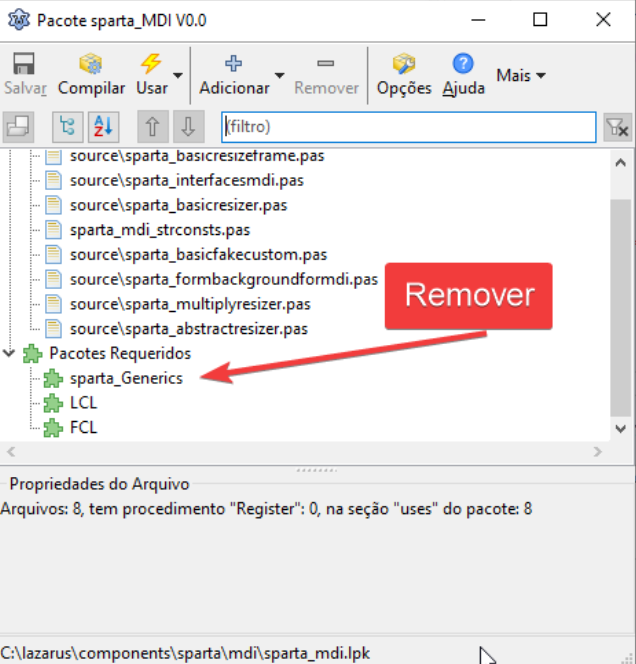

O pacote sparta é um componente neecssário para docar o formulário na área de editor de código.
O pacote sparta foi descontinuado em versões recentes. Mas se por alguma razão você ainda precisar utilizá-lo saiba que é necessário uma intervenção no código pois o mesmo tem um bug que impedirá a instalação/compilação de alguns pacotes, então temos que corrigir a situação.
Primeiro você deve determinar onde o seu lazarus está instalado, pois você precisará corrigir diretamente os fontes desse pacote. No Lazarus, vá em Package|Open Package(.lpk) e abra os seguintes pacotes:
Depois procure pelo Required Packages(pacotes requeridos) e remova deles o sparta_generics:

ALERTA: Essa é uma alteração necessária apenas para o Lazarus 2.0.12, não serve para as versões posteriores onde tal pacote foi substituído pelo dockedformeditor.